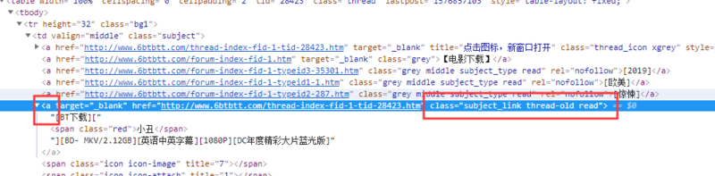

一、写在前面
最近看新闻说圣城家园（SCG）倒了，之前BT天堂倒了，暴风影音也不行了，可以说看个电影越来越费力，国内大厂如企鹅和爱奇艺最近也出现一些幺蛾子，虽然目前版权意识虽然越来越强，但是很多资源在这些主流视频网站上面依然没有，我平时看电影又习惯下载下来再看，所以每次看电影找资源就很麻烦，花了点时间，于是就有了这个程序。
二、目的
输入一部电影的名字，帮我到BT之家上面看看有没有，如果有就把下载链接复制给我。
三、设计思路
本来想的是直接爬取首页最近发布的电影，然后取判断有没有，后来想了一下，为什么不直接使用网站的搜索功能呢？
四、开始爬虫
4.1.分析网站
打开网站搜索一个结果，发现在网址里面直接修改链接的内容就能到达搜索页面，那这样就更简单。
先让用户输入一部电影的名字，直接生成链接。
# 要求输入电影名
inputname = input('\n' + '请输入您要搜索的电影：')
# 链接是用网站的搜索功能
url = "http://www.6btbtt.com/search-index-keyword-" + inputname + ".htm"接下来再看搜索结果是什么样的，使用审查元素看看，就会看到搜索结果里面电影名字和链接会在一个a标签里面，类型为subject_link thread-old read

至此网站就分析完成了
4.2.开始爬取过程
刚才已经得到了电影名和网站，那么下面直接获得搜索结果页面的内容就行,用requests获取内容，获取后顺便用beautifulsoup解析一下，解析后的东西就是有格式的，这样才能进行下一步操作。
# 获取网页内容并用beautifulsoup解析一下
soup = BeautifulSoup(requests.get(url).text,'lxml')
# 给出找到第一个结果，网站搜索结果就是把最新的排在前面，所以一个结果就够了
movies = soup.find('a','subject_link thread-old')然而现在我们是得到一段内容，它不光包含电影标题和链接，还包含其他的东西，我们要做的就是把电影标题和链接分别提取出来。
# 直接输出电影和链接
try:
link = movies.get('href')
name = movies.text ####这里用的是text，因为标签下面还有标签，是string无法获取文本内容
print('\n' + name)
print(link + '\n')
except:
print("没有找到这部电影或程序发生未知错误")这里用try和except来捕捉程序反馈，就是说假如获取的内容有问题，那程序不崩溃，就执行其他的或者进行下一步操作
至此，我们已经得到了电影和链接了，爬虫过程也算结束了。
4.3判断爬取结果和用户输入
由于电影标题出来包含真正的电影名还包含清晰度、年代、格式等等这些信息，通常是这样的
[BT下载][小丑][BD- MKV/2.12GB][英语中英字幕][1080P][DC年度精彩大片蓝光版]这些我们都不要，在把它分割出来，单独取出电影名字，分割方法就是前面是 “下载][” 后面是“][”，取中间文本就可以。
# 这是用于从网页的电影标题里面分割出真正的电影名
def get_str_btw(s,f,b):
par = s.partition(f)
return (par[2].partition(b))[0][:]
try:
mname = (get_str_btw(name,"下载][","]["))
except:
print("无法匹配搜索结果")单独取出电影名字后进行比对，这里只是简单地进行文字匹配，本来应该可以多爬取几个结果，然后模糊搜索进行匹配的。
# 判断输入的和获取到的电影名字是否匹配
if mname == inputname:
print("电影有啦！链接已复制！祝您观影愉快！" + '\n')
pyperclip.copy(link)
else:
print("我给您找到了这个!")最后再加上一个让程序运行完等一下的命令
# 程序执行完不要马上关闭窗口
os.system("pause")至此，这个程序就完成了。
运行截图
五：注意事项
5.1.导入模块的时候如果发现不能导入，可能是缺少c++运行库，去下载官方工具安装就行；
5.2网站里面看似相同的元素标签可能不同，比如那个热门电影和新电影标签不一样，一开始遍历爬取的时候发现总是报错；
5.3一定要用tryexcept来避免出现意外；
程序可能没有意义，但生命不息，折腾不止。